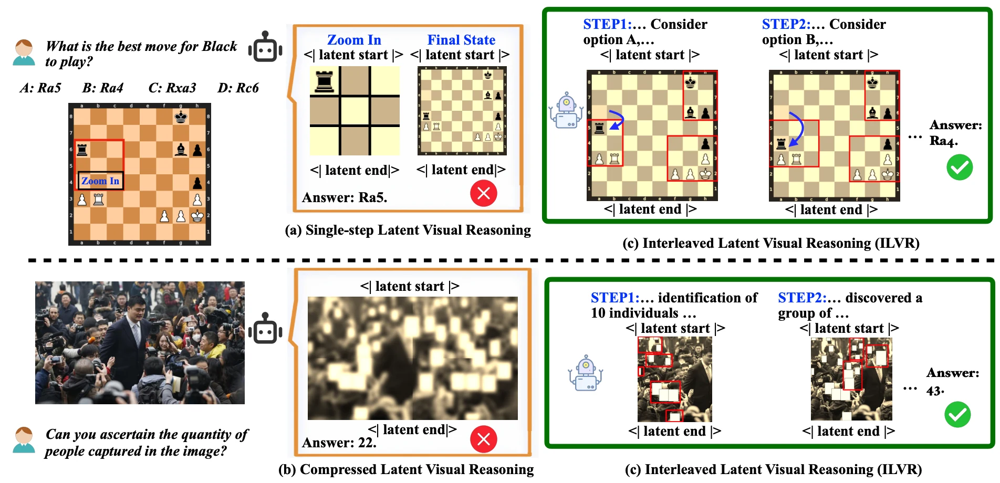
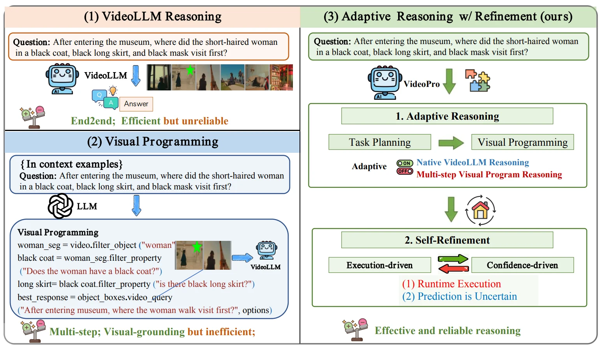
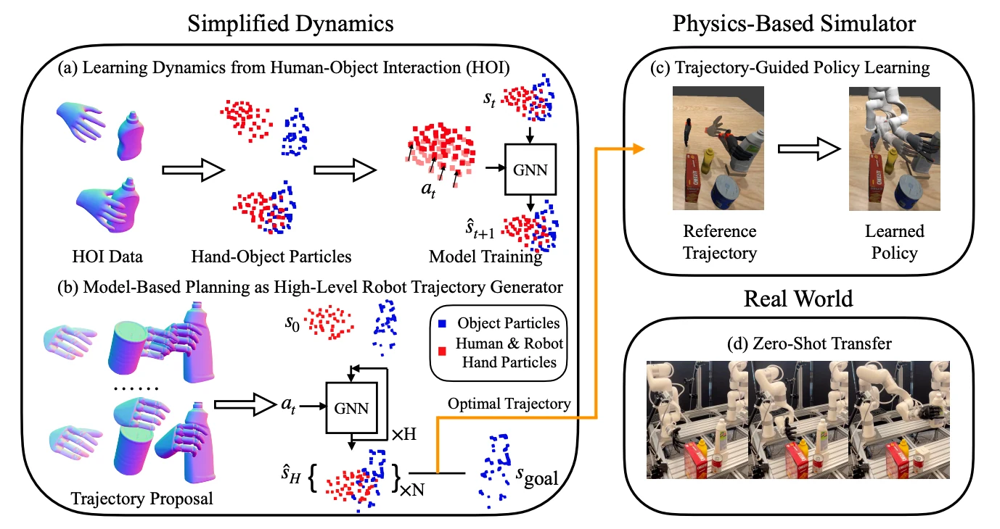
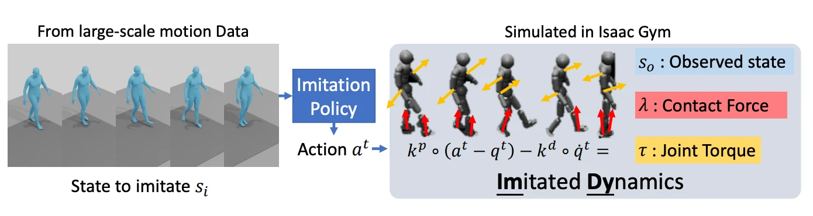
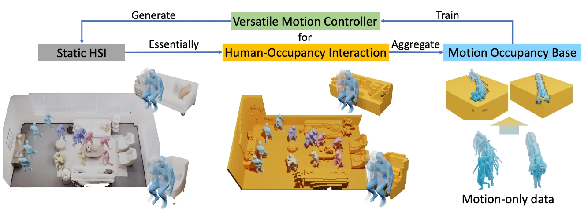

Haowen Hou
PhD Student, Shanghai Jiao Tong University
About
I am a PhD student at Shanghai Jiao Tong University, advised by Dr. Jiaqi Wang. My current research focuses LLM, MLLM and Agents. Previously, I was a research intern at Shanghai Jiao Tong University, advised by Prof. Yong-Lu Li and Prof. Cewu Lu, and at UC San Diego, where I worked with Prof. Hao Su.
Links
Publications
* Equal contribution.

VideoPro: Adaptive Program Reasoning for Long Video Understanding
ACL 2026 Main

Learning Particle-Based World Model from Human for Robot Dexterous Manipulation
RSS 2025 Workshop

